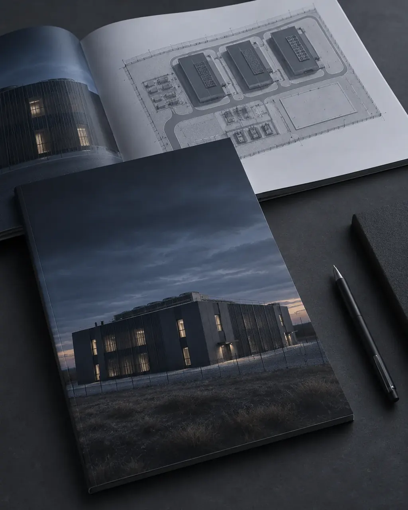
Пример концепции ЦОД
Параметры объекта, зонирование, варианты исполнения и принципиальные инженерные решения.
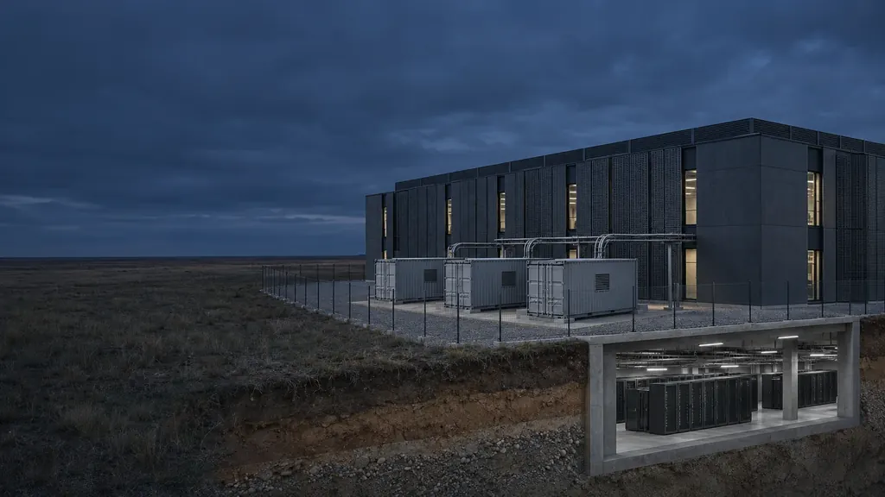
Наземный корпус Контейнерные модули Заглублённый уровеньПроектируем дата-центры с учетом физических угроз – от выбора площадки и архитектуры до защиты критической инженерной инфраструктуры.
Шесть рисков, которые мы учитываем с первого эскиза. Нажмите на точку на разрезе.
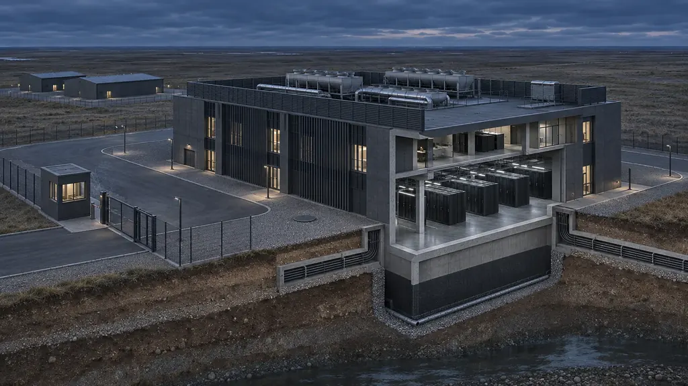
РискПосторонние в критических зонах.
В проектеЗонирование территории и здания, контролируемые входы, раздельные служебные и технические маршруты, места под системы доступа и наблюдения.
РискПовреждение конструкций и критических помещений.
В проектеОбоснованная конструктивная схема, расчёт на заданные воздействия, размещение критических помещений по оценке рисков.
РискОткрытая площадка, неблагоприятное окружение.
В проектеАнализ площадки и застройки вокруг. Заглубление или частичное заглубление — там, где оно обосновано условиями проекта.
РискОтказ электроснабжения, охлаждения, коммуникаций.
В проектеАнализ критических зависимостей, разнесение трасс и резервирование по требованиям к надежности.
РискЗатопление, проникновение воды, пожар.
В проектеОценка природных и техногенных рисков, водоотведение и гидроизоляция, противопожарные мероприятия.
РискДоступ через технические проходы, кабельные вводы и люки.
В проектеКонтролируемые техпомещения, защита вводов и люков, раздельные потоки персонала, посетителей и обслуживания.
Подбираем концепцию под IT-мощность, количество стоек, площадь, условия площадки и требования к защищенности.
Концепция
Для частной инфраструктуры, корпоративных IT-систем и локальных вычислительных задач.
Возможные форматыКлассическое здание, модульное исполнение, контейнерная конфигурация.
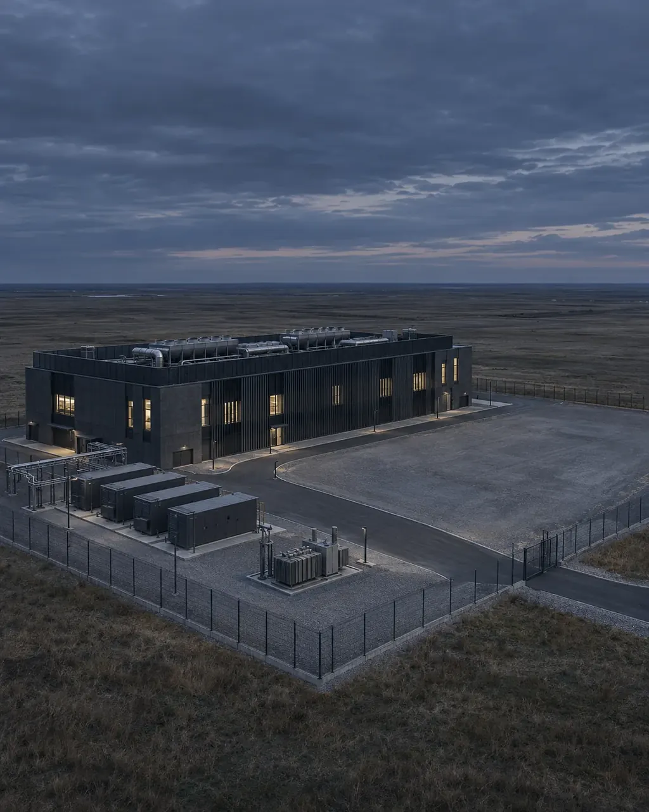
Концепция
Для корпоративных платформ, размещения IT-инфраструктуры и коммерческих сервисов.
Возможные форматыОтдельное здание, поэтапно развиваемый комплекс, модульная структура.
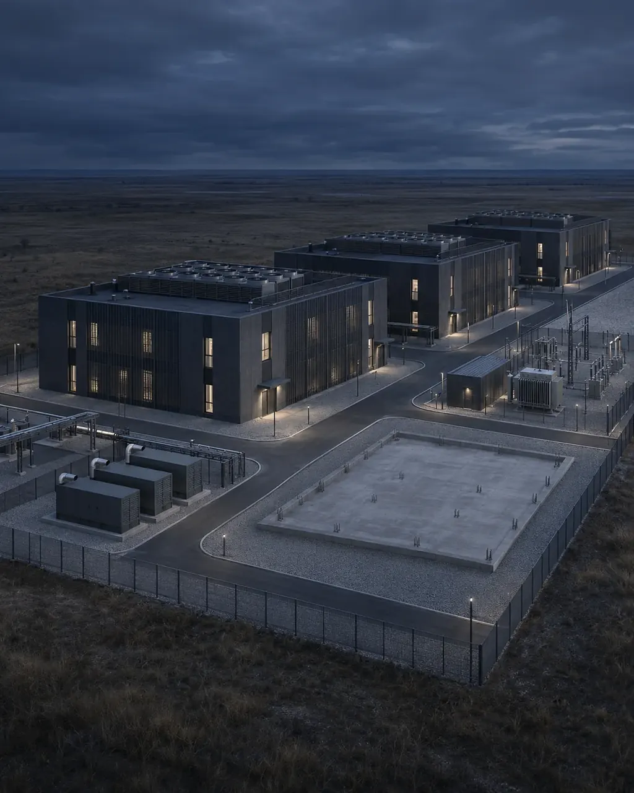
Концепция
Для масштабной цифровой инфраструктуры, крупных нагрузок и последовательного наращивания мощностей.
Возможные форматыНесколько зданий, очереди строительства, сочетание капитальных и модульных решений.
Масштаб не определяет формат. Сравниваем варианты под условия площадки.
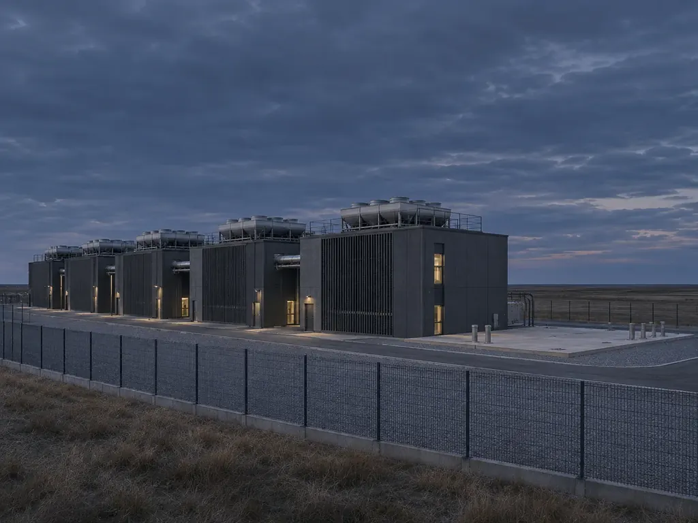
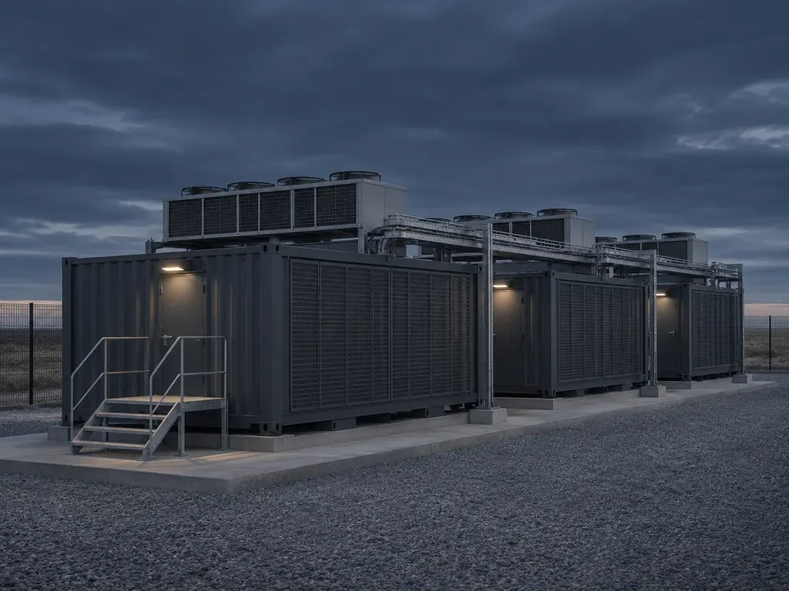
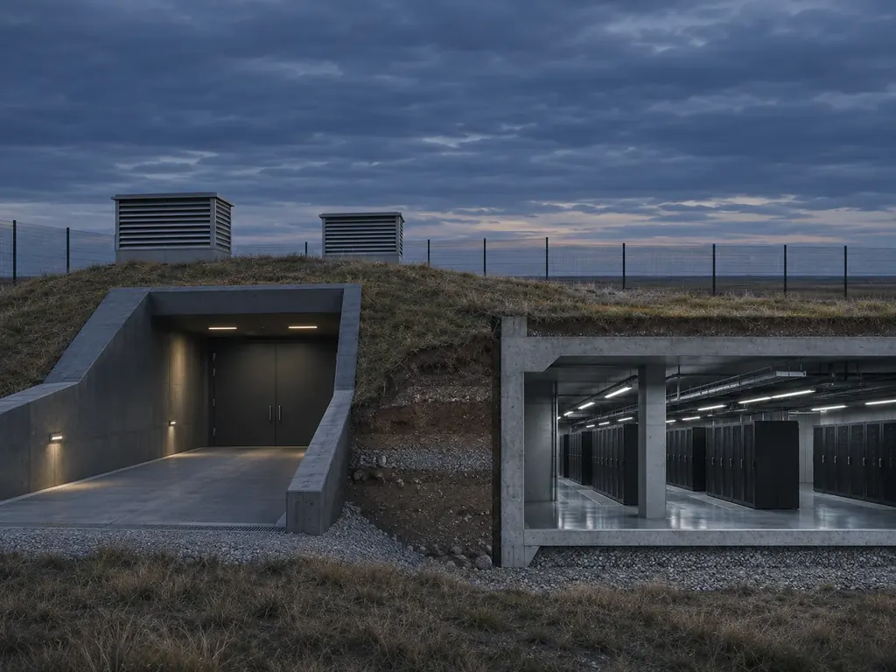
Для дата-центров любого масштаба и исполнения.
Основные параметры объекта, сравнение вариантов размещения и исполнения, предварительная оценка площадей, мощности и инфраструктуры.
РезультатКонцептуальные решения и исходные параметры для проектирования.
Функциональное зонирование, планировка, конструктивная схема и взаимное расположение технических помещений.
РезультатАрхитектурные и конструктивные проектные решения.
Электроснабжение, охлаждение, вентиляция, водоснабжение и водоотведение, другие системы по составу работ.
РезультатУвязанные между собой инженерные решения и разделы документации.
Угрозы учитываем при выборе площадки, планировке, размещении критических помещений и технических доступов. Заглубление — когда оно обосновано.
РезультатРешения под согласованные требования к физической безопасности.
Размещение оборудования, коммуникаций, технических зон и подключений к внешней инфраструктуре.
РезультатПроектная концепция или документация для выбранного формата.
Анализ требований и материалов, поиск несогласованностей, оценка проектных альтернатив.
РезультатПеречень замечаний, выводы и рекомендации.
Шесть этапов. Ключевые решения согласуем до перехода к следующему.
Определяем задачу и ограничения
РезультатТребования и список недостающих данных
Проверяем, какие решения подходят задаче
РезультатСравнение вариантов и факторы выбора
Формируем общую структуру объекта
РезультатКонцептуальные материалы на согласование
Разрабатываем согласованные решения
РезультатКомплект проектных материалов по стадии и договору
Проверяем взаимосвязи и фиксируем решения
РезультатСогласованные материалы и статус замечаний
Передаем документацию и фиксируем завершение работ
РезультатКомплект результатов в согласованном формате
Основные параметры определяем на стадии концепции и уточняем при проектировании.
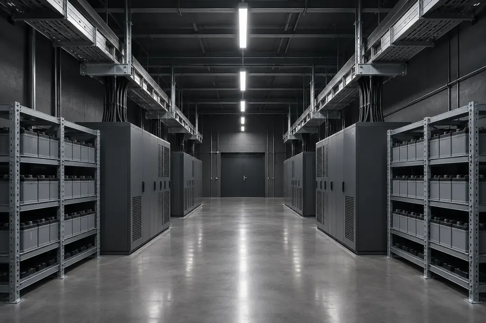
Схема от внешнего источника до стойки: UPS, ДГУ, распределение и независимые пути питания A/B.
Полную нагрузку объекта при 1,2 МВт IT считаем отдельно: с охлаждением, потерями и вспомогательными системами. 10 минут UPS — исходное требование.
Рассчитываем: IT-нагрузку, схему A/B, конфигурацию UPS и время автономии, мощность ДГУ, время запуска и запас топлива.
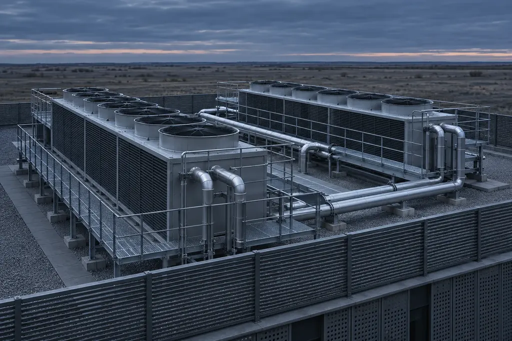
Отвод тепла с учётом плотности нагрузки, планировки залов, климата и требований производителей оборудования.
100 стоек × 12 кВт = 1,2 МВт IT-нагрузки
Для оценки принимается, что почти вся потребляемая IT-оборудованием энергия превращается в тепло. Итоговая мощность системы охлаждения определяется отдельным расчетом.
Рассматриваем: воздушное охлаждение с изоляцией горячих и холодных коридоров, жидкостное — для высокоплотного оборудования, резерв холода, сезонные режимы и обслуживание.
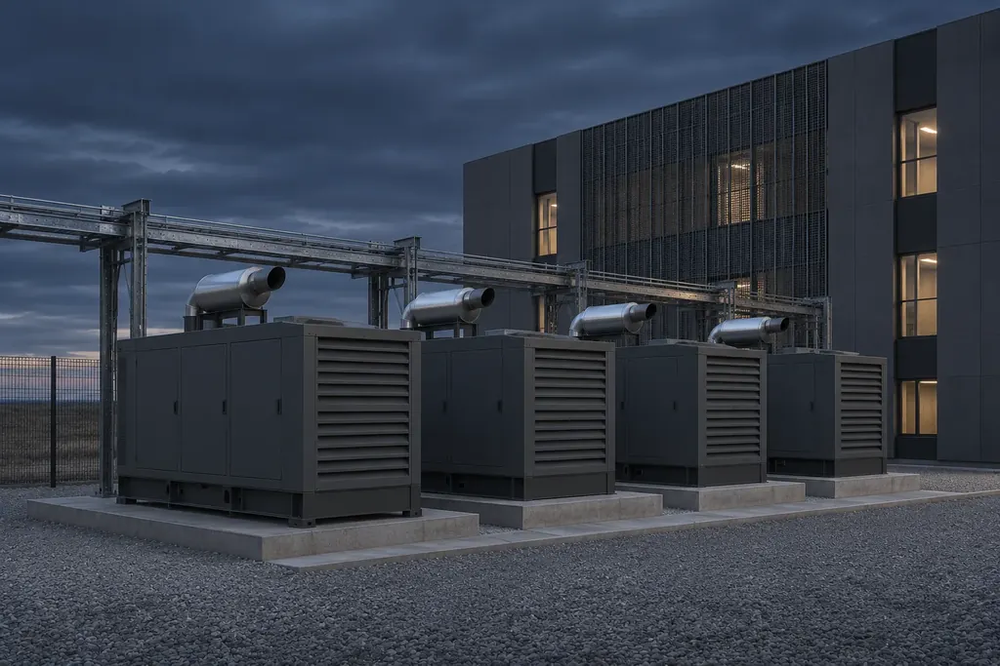
Проверяем, как объект работает при отказе компонента и что можно обслуживать без остановки нагрузки.
3 модуляБез резерва
4 модуляОдин резервный
2 × 3 модуляДве независимые системы
рабочий модуль 400 кВтрезервный
Пример: нагрузка 1,2 МВт, модули по 400 кВт. Конкретная схема зависит от характеристик оборудования и требований к доступности.
PUE = Энергия ЦОДЭнергия IT
| PUE | Полная мощность | Состав нагрузки |
|---|---|---|
| 1,3 | 1,3 МВт | |
| 1,5 | 1,5 МВт | |
| 1,8 | 1,8 МВт |
IT-нагрузкаинженерные системы и потери
Значения PUE приведены исключительно для демонстрации расчёта. Фактический показатель зависит от климата, нагрузки, архитектуры объекта и методики измерения. Целевой PUE задается и проверяется для конкретного проекта.
Классический, модульный, контейнерный или подземный — выбор зависит от мощности, площадки, защищенности и развития объекта.
Вы получаете сравнение концепций, их преимущества и ограничения.
Резервирование, охлаждение, электроснабжение и физическую защиту увязываем между собой, а не рассматриваем по отдельности.
Вы понимаете допущения и ограничения до принятия решения.
Состав работ, этапы и точки согласования известны с начала. Изменения требований видны и учитываются.
Вы видите, что уже решено и что требует уточнения.
Доступ к оборудованию, обслуживание, сценарии отказов и рост IT-нагрузки.
Вы заранее знаете последствия схемы для развития объекта.
Расскажите о задаче и исходных параметрах. Определим, какие варианты рассмотреть и какие данные нужны для предварительной концепции.
Материалы, которые помогут начать работу над проектом.

Параметры объекта, зонирование, варианты исполнения и принципиальные инженерные решения.
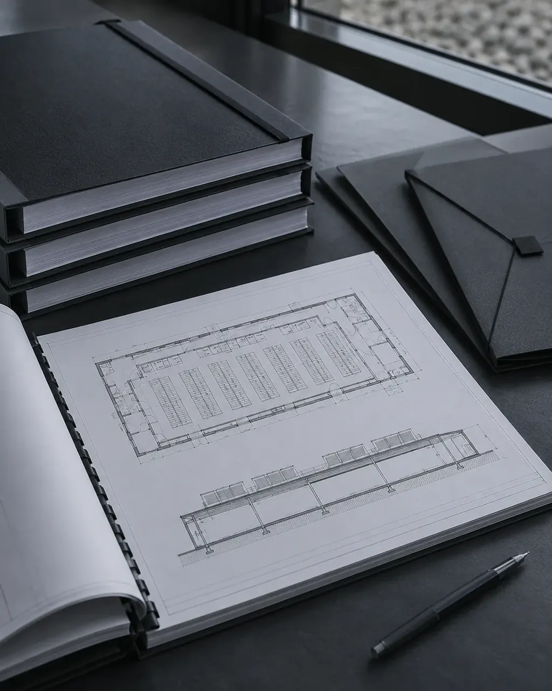
Что готовится на каждом этапе — от сравнения концепций до проектных решений.
Мощность, площадка, надежность, инфраструктура. Подходит, даже если ТЗ ещё нет.
Да, заглублённое или частично заглублённое размещение — один из вариантов исполнения. Применимость зависит от геологии и гидрогеологии, уровня грунтовых вод, водоотведения, пожарной безопасности, эвакуации, охлаждения и доступа к оборудованию. Сначала оцениваем ограничения площадки.
Зависит от масштаба, IT-нагрузки, сложности инженерии, формата, площадки и состава документации. После уточнения задачи готовим предложение с составом работ, результатами и допущениями.
Универсального варианта нет. На этапе концепции сравниваем применимые варианты по единым критериям: мощность, площадка, инженерные ресурсы, надежность, расширение и эксплуатация.
Да. Достаточно известных параметров: IT-мощность, количество стоек, регион, наличие площадки, требования к надежности и желаемый формат. Если данных не хватает, составим список вопросов для уточнения.
Зависит от масштаба, состава работ, числа вариантов, полноты данных и согласований. Концепция и полный комплект документации — разные по объёму этапы, поэтому сроки определяются после уточнения задачи.
Да: зонирование, маршруты доступа, размещение критических помещений, конструктивные решения, защита инженерных вводов. Набор мер зависит от требований, оценки рисков, площадки и норм. Проект снижает риски, но не гарантирует абсолютной защищенности.
С обсуждения задачи и исходных данных: назначение, IT-нагрузка, надежность, площадка, ограничения. Затем определяем, чего не хватает и какая предварительная проработка нужна.